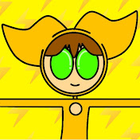

Link: Super Energético - YouTube

Bem-Vindo(a),
Para entender um pouco dessa história, precisamos conhecer os diamantes e seus usuários:
Diamante do raio: Usado por Super Energético
Diamante da mente: Usado por Super Energia
Diamante das asas: Usado por Sup Wings
Diamante reverso: Usado por Sem Energia
Diamante da criação: Usado por Super Cookie
Diamante da resistência: Usado por Super Steel
Diamante da habilidade: Usado por Sup Wolf
Diamante do portal: Usado por Super Portal
Diamante do chiclete: Usado por Super Clete
Diamante do ricochete: Usado por Subarashī Panter
Diamante das plantas: Usado por Subarashī Oka
Diamante da luz e da escuridão: Usado por Super Double
Diamante da água: Usado por Super Amanzi
Diamante do gelo: Usado por Super Amanzi
E esses são só alguns dos principais diamantes.Óbvio que a história é bem maior do que parece, então irei resumir a parte principal, até porque você, , não deveria estar lendo isso.
Um bilionário queria replicar o que aconteceu no passado, o colapso entre as dimenções. Mas desta vez ele não queria mandar ninguém que não queira para outras dimenções, ele queria criar um portal. Porém deu tudo errado, diversas pessoas foram lançadas para outras dimenções, inclusive ele. Explorando outra dimenção ele encontrou sua esposa, mas sua filha havia ficado para trás. Naquela dimenção eles encontraram uma civilização e ficaram lá por um tempo. Em desespero ele mal lembrou que sua esposa estava grávida de um menino, que iriam chamar de João. O filho deles nasceu lá mesmo, até que em um momento os dois foram lançados de volta a Terra, porém João ficou para trás, tendo que viver até seus 6 anos em um orfanato. Um dia ele finalmente fugiu de lá, correndo, esbarrou em uma criança (que na verdade era o Super Energético). Os dois se tornaram amigos, mas a criança ainda era um super herói, que lutava contra o Sem Energia, seu pior inimigo. Um dia os dois acordaram e Sem Energia estava prestes a matar os dois, para pegar um mapa com a localização dos 3 diamantes do poder. A criança então entrega seu diamante que o transformava em Super Energético e o mapa para João, passando o legado de Super Energético para ele...
O que acontece depois? Não posso te falar, futuramente serão lançados livros explicando toda essa história. Esse foi apenas o começo.
, selecione o espaço vazio que está aí em cima, existe um segredo...
Também devemos saber os poderes que cada diamante passa ao seu usuário:
O diamante do raio te permite se locomover em altas velocidades, criar raios e arremessá-los onde quiser.
O diamante da mente, como o próprio nome já diz, ele pode aumentar seu IQ, ou seja, sua inteligência.
Quanto o diamante das asas, eh... Ele te permite voar, não é óbvio?
O diamante reverso, surgiu a partir da agonia de um dos primeiros usuários do diamante do raio, copiando quase todos os seus poderes, mas os deixando de forma mais escura, além de guardar uma maldição que altera quase completamente a mente do usuário, o deixando maluco.
O diamante da criação, consiste em criar um "cookie" e poder transforma-lo em qualquer coisa.
O diamante da resistência torna seu usuário quase indestrutível, transformando todo o seu corpo em metal que de alguma forma se regenera.
O diamante da habilidade te permite você aprimorar seus desvios, aumentando suas chances de sair intacto de uma batalha.
O diamante do portal pode criar portais que te levam a uma distância bem elevada, com um limite de 3 KM
O diamante do chiclete te permite se esticar e grudar nas coisas, podendo até mesmo ser esmagado e sair ileso.
O diamante do ricochete pode te salvar de diverças situações, pois ele "revida" quase qualquer ataque.
O diamante das plantas, como o próprio nome já diz, ele te permite criar qualquer tipo de planta automaticamente, além de te permitir criar morros e montanhas instantaneamente.
O diamante da luz e da escuridão (ou diamante em dobro) é o único diamante conhecido atualmente que tem mais de uma forma, sendo sua forma base (metade amarelo e a outra metade cinza), e as formas separadas (a cinza, que é a da escuridão e a amarela, que é a da luz).
Tanto o diamante da água quanto o do gelo, servem para manipular a água, a diferença é o estado da água e que o do gelo pode congelar as pessoas.
Ok, sim. Eu vou agora contar a história dos outros 2 personagens da equipe principal.
Rafael era um menino em que seus pais foram arremessados para outra dimenção, assim como os outros, ele nasceu lá, e seus pais também acabaram voltando para a Terra sem vontade. Um dia ele encontrou em sua gaveta, uma carta da sua mãe, que dizia ter encontrado um estranho diamante verde-água na cachoeira, mas que provavelmente não conseguiria pegá-lo antes de voltar à Terra. Rafael ficou perplexo, "o que é a Terra?" e "que diamante é esse?". Ele então decide procurar na cachoeira, e surpreendentemente encontra o diamante, mas ao tocá-lo, um estranho traje aparece nele e o diamante some. Dessa vez ele já entendeu tudo, o diamante aumentou seu IQ e agora ele está a procura de uma entrada para a Terra.
Bia teve o mesmo destino dos outros, de nascer em outra dimenção, por ser diferente dos outros moradores de lá, ela foi treinada para usar o diamante das asas, mas tinha um problema nisso: Nem a sua mãe nem ninguém poderia chegar perto dela, pois o seu destino era treinar incansavelmente para caso de guerra. Bia não queria isso, então um dia fugiu do castelo onde estava presa e acabou encontrando seus futuros companheiros de equipe: Super Energético e Super Energia.
, selecione o espaço vazio que está aí em cima, existe um segredo...
Essa parte é um pouco complicada, o funcionamento dos diamantes.
Existe uma coisa chamada imunidade que é distribuída para as pessoas ao nascer, definida pelo seu DNA.
A imunidade define o limite da potência do diamante que você pode usar. Caso você use um diamante com uma potência mais alta que a sua imunidade, você pode acabar morrendo brutalmente de diversas formas diferentes, dependendo do diamante que você usar.
Para saber a potência do seu diamante, basta segurá-lo com uma luva específica que foi criada pelo Super Energia. Caso você comece a sentir choques ou queimaduras, significa que seu organismo não suportaria usar aquele diamante.
De qualquer forma, tanto os diamantes quanto a luva não poder ser compradas no mercado, pois estes só podem ser usados por especialistas na área dos diamantes, ou seja: a S.U.P.
Por enquanto, , essas são todas as informações que foram vazadas oficialmente da SUP.